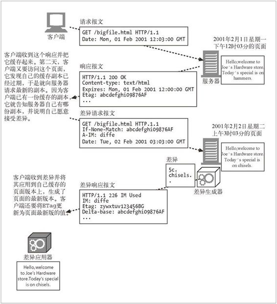

15.10 差异编码
我们曾把网站页面的不同版本看作页面的不同实例。如果客户端有一个页面的已过期副本，就要请求页面的最新实例。如果服务器有该页面更新的实例，就要把它发给客户端，哪怕页面上只有一小部分发生了改变，也要把完整的新页面实例发给客户端。
若改变的地方比较少，与其发送完整的新页面给客户端，客户端更愿意服务器只发送页面发生改变的部分，这样就可以更快地得到最新的页面。差异编码是 HTTP 协议的一个扩展，它通过交换对象改变的部分而不是完整的对象来优化传输性能。差异编码也是一类实例操控，因为它依赖客户端和服务器之间针对特定的对象实例来交换信息。RFC 3229 描述了差异编码。
图 15-10 更清楚地展示了差异编码的结构，包括请求、生成、接收和装配文档的全过程。客户端必须告诉服务器它有页面的哪个版本，它愿意接受页面最新版的差异（delta），它懂得哪些将差异应用于现有版本的算法。服务器必须检查它是否有这个页面的客户端现有版本，计算客户端现有版本与最新版之间的差异（有若干算法可以计算两个对象之间的差异）。然后服务器必须计算差异，发送给客户端，告知客户端所发送的是差异，并说明最新版页面的新标识（ETag），因为客户端将差异应用于其老版本之后就会得到这个版本。

图 15-10 差异编码的结构
客户端在 If-None-Match 首部中使用的是它所持有页面版本的唯一标识，这个标识是服务器之前响应客户端时在 ETag 首部中发送的。客户端是在对服务器说：“如果你那里页面的最新版本标识和这个 ETag 不同，就把这个页面的最新版本发给我。”如果只有 If-None-Match 首部，服务器将会把该页面的最新版本完整地发给客户端。（假设最新版和客户端持有的版本不同。）
不过，如果客户端想告诉服务器它愿意接受该页面的差异，只要发送 A-IM 首部就可以了。A-IM 是 Accept-Instance-Manipulation（接受实例操控）的缩写。形象比喻的话，客户端相当于这样说：“哦对了，我能接受某些形式的实例操控，如果你会其中一种的话，就不用发送完整的文档给我了。”在 A-IM 首部中，客户端会说明它知道哪些算法可以把差异应用于老版本而得到最新版本。服务端发送回下面这些内容：一个特殊的响应代码——226 IM Used，告知客户端它正在发送的是所请求对象的实例操控，而不是那个完整的对象自身；一个 IM（Instance-Manipulation 的缩写）首部，说明用于计算差异的算法；新的 ETag 首部和 Delta-Base 首部，说明用于计算差异的基线文档的 ETag（理论上，它应该和客户端之前请求里的 If-None-Match 首部中的 ETag 相同！）。表 15-5 中总结了差异编码使用的首部。
表15-5 差异编码所用的首部
| 首 部 | 描 述 |
|---|---|
| ETag | 文档每个实例的唯一标识符。由服务器在响应中发送；客户端在后继请求的 If-Match 首部和 If-None-Match 首部中可以使用它 |
| If-None-Match | 客户端发送的请求首部，当且仅当客户端的文档版本与服务器不同时，才向服务器请求该文档 |
| A-IM | 客户端请求首部，说明可以接受的实例操控类型 |
| IM | 服务器响应首部，说明作用在响应上的实例操控的类型。当响应代码是 226 IM Used 时，会发送这个首部 |
| Delta-Base | 服务器响应首部，说明用于计算差异的基线文档的 ETag 值（应当与客户端请求中的 If-None-Match 首部里的 ETag 相同） |
实例操控、差异生成器和差异应用器
客户端可以使用 A-IM 首部说明可以接受的一些实例操控的类型。服务器在 IM 首部中说明使用的是何种实例操控。不过到底哪些实例操控类型是可接受的呢？它们又是做什么的呢？表 15-6 中列出了一些在 IANA 注册的实例操控类型。
表 15-6 在IANA注册的实例操控类型
| 类 型 | 说 明 |
|---|---|
| vcdiff | 用 vcdiff 算法计算差异a |
| diffe | 用 Unix 系统的diff-e 命令计算差异 |
| gdiff | 用 gdiff 算法计算差异b |
| gzip | 用 gzip 算法压缩 |
| deflate | 用 deflate 算法压缩 |
| range | 用在服务器的响应中，说明响应是针对范围选择得到的部分内容 |
| identity | 用在客户端请求中的 A-IM 首部中，说明客户端愿意接受恒等实例操控 |
a：因特网草案 draft-korn-vcdiff-01 中描述了 vcdiff 算法。该规范在 2002 年初期由IESG（Internet Engineering Steering Group，因特网工程指导组）批准，将很快以 RFC 的形式发布。（译注： vcdiff 的规范由RFC3284 发布。）
b：http://www.w3.org/TR/NOTE-gdiff-19970901.html 描述了 gdiff 算法。
图 15-10 中，服务器侧的“差异生成器”根据基线文档和该文档的最新实例，用客户端在 A-IM 首部中指明的算法计算它们之间的差异。客户端侧的“差异应用器”得到差异，将其应用于基线文档，得到文档的最新实例。例如，如果产生差异的算法是 Unix 系统的 diff-e 命令，客户端就可以用 Unix 系统中的文本编辑器 ed 提供的功能来应用差异，因为 diff-e <file1> <file2> 产生了一系列 ed 命令来把 <file1> 转化为 <file2>。ed 是一个非常简单的编辑器，支持一些命令。在图 15-10 的例子中，5c 说明要删除基线文档的第 5 行，而 chisels.<cr>. 说明要添加 chisels.，就这么简单。对于更大的改动，会产生更复杂的指令。Unix 系统的 diff-e 算法是对文件进行逐行比较的，这对于文本文件没问题，但并不适合二进制文件。vcdiff 算法更强大，对于非文本文件也适用，并且产生的差异比 diff-e 要小。
差异编码的规范中详细定义了 A-IM 和 IM 首部的格式。在这里，我们只要知道这些首部中可以说明多个实例操控（并可以带有相关的质量值）就够了。在返回给客户端之前，文档可以经过多种实例操控，这样可以获得最大程度的压缩。例如，用 vcdiff 算法产生的差异随后可以再用 gzip 算法压缩。于是服务器的响应中就含有 IM:vcdiff, gzip 首部。客户端应当先对内容进行 gunzip，再把得到的差异应用到自己的基线页面上，这样才能生成最终的文档。
差异编码可以减少传输次数，但实现起来可能比较麻烦。设想一下页面改动频繁，而且有很多不同的人都在访问的情形。支持差异编码的服务器必须保存页面随时间变化的所有不同版本，这样才能指出最新版本与所请求的客户端持有的任意版本之间的差异。（如果文档变化频繁，而且有很多客户端都在请求文档，那它们就会获得文档的不同实例。随后当它们再向服务器发起请求时，它们将请求它们所持有的版本与最新版本之间的差异。为了能够只向它们发送变化的部分，服务器必须保存所有客户端曾经持有过的版本。）要降低提交文档时的延迟时间，服务器必须增加磁盘空间来保存文档的各种旧的实例。实现差异编码所需的额外磁盘空间可能很快就会将减少传输量获得的好处抵消掉。